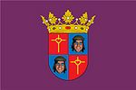

Palencia
 De: La Frikipedia, la enciclopedia extremadamente seria.
De: La Frikipedia, la enciclopedia extremadamente seria.
| De la serie ciudades del mundo:
|
| Palencia
|
| 
|
|
| (Bandera)
|
(Escudo de armas)
|
|
| Topónimo oficial
|
Palencia
|
| País
|
Palencia (Capital del Estado)
|
| Código postal
|
34xxx
|
| Superficie
|
Escasa, pertenece a Valladolid. Formaban parte de Pajarillos pero les echaron .
|
| Altitud
|
A ras de suelo
|
| Distancia
|
Kilometro 0 de España
|
| Fundación
|
d.V( después de Valladolid)
|
| Población
|
Viejos, Pij@s,los chinos,+ Pijas, canis, extrangeros y personas normales con sus respectivas familias
|
| Gentilicio
|
Palentinos aunque los típicos paletos nos denominan "palencianos".
alcalde = Alfonsito Polanco
|
| Alcalde
|
{{{alcalde}}}
|
| Palencia, como todo lugar del mundo, tiene 4 estaciones, la de Renfe, la de Autobuses, el Invierno (largo), y el verano (corto pero duro)
|
Capital del Reino de María fontaneda, además de ser centro de producción del mítico surtido de pastas Reglero, es decir, la fábrica de la Siro. Considerado generalmente como el gran polígono agrario de Valladolid. Con Fachadolid mantienen una gran rivalidad y en todas sus fiestas se unen todos en el grito de guerra de "Pucelano el que no bote".
La vida de la ciudad se controla y dirige desde dos establecimientos hosteleros de capital importancia para el desarrollo personal de los palentinos: De día desde el Guarro o Marrano(AKA Trompicon) y de noche desde el Jijas (AKA Juan Sebastián). Desde allí se surte de proteinas y calimocho (y MDMA) suficientes como para alimentar a toda la provincia.
INTRO
Palencia es conocido por el resto de Castilla y León por la dureza con la que se trata a los forasteros... (sobre todo si son de Valladolid o alrededores).
Curiosidades
- Es la ciudad del mundo con más pasos de cebra por habitante, pero lo bueno es que, por supuesto, no sólo no los respetan los coches, ¿por qué alguién ha visto a un peatón palentino cruzando por un paso de cebra como dios manda?.
- A su vez, es la ciudad de España con más rotondas y más personas andando por medio de la calzada.
- Es la única capital de provincia donde el PSOE alcanzo la mayoría absoluta en las municipales siempre (o al menos así fue durante siglos), hasta las elecciones del 2011, no por que Palencia sea la ciudad "roja" de Castilla y León, sino porque el Alcalde es un meapilas y aquí lo primero es la devoción. Además invita a todos los jubilados a un roscón en Navidad, sale en TelePalencia en fiestas bailando el Paquito El Chocolatero con las peñas, se saluda hasta así mismo cuando va por la calle y encima hace unos magníficos pregones de ferias en los que parece un paleto provinciano populista, y que tanto gustan a los que entonan el ¡Dios te salve granero de España!.
- Como comentábamos, Inodoro Gallego perdió la supremacía, tras su buena gestión; prometiendo lo que en Palencia es conocido como el Soterra-miento, y por ser un "corredor de fondo" de estos con cachaba y muletas.
- El próximo 2012 será nombrada Ciudad Europea de La Bolsa y del Papel Volador, ¿Has visto a algún palentino que no tiré sistemáticamente todo lo que le sobre al suelo?, (pero que la gente no piense que la causa es por falta de civismo, es por una causa noble, ayudar a crear empleo, más barrenderos).
Población
La poblacion palentina es la siguiente: Muchos viejos, poca juventud, sobre los ochenta y pico mil (o más).Esta característica la hermana con otras villas del País Llionés.
Personajes ilustres
A Fernandito le conoce todo Palencia .
- Ramón Calderón (¡SI, NO ES BROMA!) (Este es de aquí!)
- Sergio Asenjo: El "gran" portero del Patético de Madrid.(Es suplente)
- Ramon Arangüena: Periodista en las mañanas de la tele
- Cesáreo Estébanez: Actor (Romerales en Farmacia de Guardia, el camarero de Manolito Gafotas, tambien sale en Matrimoniadas)
Monumentos y lugares de interés
No puedes pasar por Palencia sin hacer una parada en el mundialmente conocido "El tropicón" (Guarro/Marrano para los amigos) a pedir unos torreznos, un bi-lomo bi-huevo, bi-chorizo con ese sabor tan...especial.
Bares
El mayor monumento de la cuidad, El Cristo.
GARITOS DE ALTERNE MÁS PECULIARES:
- Irish Pub. Típico bar para echarse unas risas con los amigos y ver los partidos de fútbol.
- La Gomila. Buena música (desde Pearl Jam a Mónica Naranjo), buena gente, guardería a tiempo parcial en fiestas y puentes.
- D2. Música "increible(-mente repetitiva)"(vas a cerrar el bar,no jodas,yo kiero rock&roll a donde voy ahora!!)
- Club 38. Conocido como el 8. Para los que odian ir a sitios como la Chapó es otra alternativa. Música de nuestros padres, repleto de abuelos. Se dice que fue la primera discoteca de España
- Utopia. Con la nueva reforma el bar mola, es de poperillos y mods. Poca gente lo sabe, pero el dueño (el pelirrojo) era de niño el famoso Teo de los libros infantiles.
- El Paso, actual Tequila. Buen futbolin y buen sitio para follar (encima del piano).
- Carpanta. Pijos (principalmente)y gitanos(es verdad). Bar frecuentado por fachas al igual que el 3-60.
- Cleofas--Crisol. Multicultural. De vez en cuando tienen lugar espectaculos de ``Pressing Catch´´ en directo.
- La caja de pandora. Buena música (La fuga, Marea...), actualmete cerrado, un míto en los bares palentinos, que empezó siendo un bar de jefis (Xanadu), pasó por ser un bar de hippies perroflautas hasta convertirse en un bar de rokeros, raperos y yonkos.
- Merlin. Pijos y/o payasos y cerdacos.
- Chapo. Un gallinero, si no pillas ahi... es que eres muy feo.
- Napoli. Su dueño(El Movi), es conocido por ejercer en su bar de policía antidrogas, huele los porros a 200 metros.
- Universonoro. Lugar donde acabar la fiesta o debatir si se va al Club 38 de after o no. Son modernitos, lo cual se puede comprobar en la decoración del Principito.
- Pelu's bar (antiguo Jijas Bar): bar de punkis, rockeros trasnochados, heavys, metaleros, hardcores.
- El Josele. Atraviesa la puerta, di la contraseña y descubrirás un mundo diferente.
- Carabel(guarderia). Dicoteca en la que hay de todo un poco. Quién no ha pasado por allí en su adolescencia no es trigo limpio.
- Gabana. Discoteca en la que hay de todo, mezclas muy curiosas, actualmente se encuentra cerrada.
- El Eden: principal causa de los fracasos escolares del instituto Victorio Macho, (Lugar para hacer pellas, lleno de lo peor del Victorio, Qinquis, canis, chonis y los más peligrosos de todos: ochenteros con cachava).
- Capitan flint. Fumadores de hiervas
- Bora Bora. Último bar de los sábados palentinos por excelencia turística internacional, lugar para ir a pillar, a la desesperada, que ya es de día.
- Frutería "XÍA-BAI". Son los encargados de abastecer a los jóvenes palentinos menores de edad de bebidas alcoholicas .
Telepizza
Están poniendo un monumento parecido en el vial
Según un conocido matemático y físico nuclear de Palencia, afincado en Valdespina, al menos el 90% de la población joven ha trabajado en Telepizza o conoce a alguien que ha trabajado en el telepizza de Palencia del Salón (ahora hay dos). Un lugar en el que los jóvenes pueden ser explotados a cambio de recorrer con su moto las calles palentinas, sorteando todo tipo de obstáculos ( Policía local, amas de casa en todo terreno, búhos extraterrestres, carritos de la compra, etc).
Su servicio es recibir a mala hostia las bromas telefonicas y nutrir a Palencia con pizzas con masa fermentada (puntos negros) queso que se pone morado y hamburguesas recalentadas en el microondas que saben a mierda y el pan esta hecho con los restos del horno del dueño.
El seminario
El seminario está es lleno de pijos. Solo se salva el Jimmy Jazz. Esta zona destaca por el increible misterio que ni Friker Jimenez ha resuelto de los cubatas desaparecidos al posarlos en una mesa cualquiera, se rumorea que un limpia cristales te los quita y les tira al suelo. Posee una mascota llamada Struglas, va con una botella de agua pis y debe estar afiliada a la asociación de tartamudos de España. También te puedes encontrar personas maduritas a los que se les ha pasado el arroz y que hacen a todo, si te gusta el gore este es tu sitio.
La Dársena
Es un barrio tranquilito y bastante bien hecho para los botellones o fumadores de diversas sustancias ya que por la ria y en la darsena rara es la vez que pase la nacional ya que no suele haber mucha gente, antes estaba mucho mejor cuando la nave de la Dársena estaba abierta para ir a follar o a fumar algo, ahora es un museo del agua.
El Monte el Viejo
Paraje natural de la ciudad que se utiliza en verano para ir a la piscina y durante todo el año para lo que en Palencia se denomina "subir a ver los ciervos", en otra ciudades se dice ir a echar un polvo en el coche. Con un poco de suerte puedes ser observado por viejetes mirones. Las estadísticas apuntan que en Palencia, una chica con una edad entorno a los 25 años, pueder haber subido "a ver los ciervos" una media de 17 veces, pero las hay más jovenes que han subido más veces.
Carriles bici
- Carril bici del rio Carrión: Situado a las orillas del rio y conocido principalmente por la concentracion los sábados de jóvenes y no tanto, para realizar "MACRO-BOTELLONES". Situado al lado del puente del hierro.Lo que antes eran patos, ahora son niñ@s de 13 años chillando borrach@s. Se puede contemplar el espectáculo a partir de las 18:30
- Carril bici del monte: De gran longitud, antes de que te enteres estas en la cuneta.
- Carril bici del Vial: Obra faraónica conocida como el Burladero, debido a su vallado.
Cierto Pueblo de las afueras
Conocido por su fabrica de galletas SIRO, por su ferrocarril, sus puentes, y la Briquetera, como algo que no se sabe bien lo que es. Este pueblo en breve alcanza la situacion de gran ciudad por su cantidad de habitantes. Destaca por su magnifica organización laberíntica, en el que es más fácil perderte que en una gran ciudad. Su centro histórico son las vías, ya que sus habitantes se trasladaron a las zonas cercanas para estar bien comunicados.Se le considera el pueblo más "bonito" de la provincia de Palencia, y probablemente también uno de los más "bellos" de España. Se esta barajando la posibilidad de cambiar su nombre por el de Venta de Gramos. La alcaldesa es pastelera, o dicho de otra manera, le gustan mucho los bollos.
Vocabulario palentino
- Arambol: Pasamanos.
- A pachas: A medias, pero solo lo saben en Palencia
- Arrebujarse: Taparse.
- Banzo: Badén, desnivel
- Cachaza: Tranquilidad.
- Calcarse: Apoyarse.
- Chiguito: Niño.
- Chirri: Coño, agujero negro
- Comemierdas: Término utilizado para pedir pasta a la peña.
- Corito: Desnudo.
- Costrollo: Poco agraciado.
- Cusquejo: Perro pequeño.
- Currusco: Extremo de la barra de pan.
- Enciscar: Meter cizaña.
- Escolingarse: Deslizarse.
- Escullar: escurrir (nadie sabe por qué se dice así)
- Esmorrarse / Esmocharse: Caerse.
- Estar como un tito: Estar muy moreno.
- Gargajo / japo: Escupitajo.
- Macrodeficient: Sin remedio, gilipollas.
- Pelar la pava: Perder el tiempo hablando de cosas sin importancia.
- Pepla / Apamplao / Manguanfer / Pánfilo / Tarugo: Pardillo.
- Quedarse tan oreao: Quedarse como si nada.
- Rodea: servilleta, paño de cocina.
- Sornavirón: Tortazo.
- Tejemaneje: Lío
- Truño/Zurullo/Cagajo: Mierda.
- Turullo: Ruido.
- Vas que chutas: Estas flipando.
- ¡Venga hasta luego!: Vete a tomar por culo.
- Chorbo: Lío / novio.
- Haber tanta mierda que patinan las moscas:Haber mucha mierda.
- Ser para mear y no echar gota:Quedarte alucinado/sorpendido.
Curiosidades
- Son nombrados por la SDJ en su canción "Corrupción en Palencia" donde se habla de el tráfico de vacas y la forma en que se adultera el trigo en épocas de sequía.
- Tenemos el equipo mas irregular de la liga, y de 2ªB, unas veces te hace el partido de su vida y otras pierde de forma vergonzosa.
- El leísmo y el laísmo es algo muy común, así que pasamela o pasamele esta bien dicho, coño!.
- En Palencia (tras el paso de Inodoro) la palabra soterramiento pasó a considerarse compuesta: soterra-miento.
Autor(es):
- Krusher
- Nexo
- Haakjvork
- Super blue
- doctor grijander
- Frikiman
- Aque
- Yeeaah!
- DraKan
- Secret
Frikipedia 2005-2016, Licencia
GFDL 1.2 - Extraído por FrikiLeaks